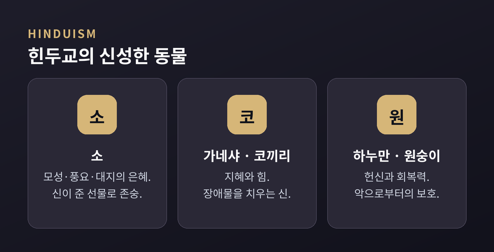
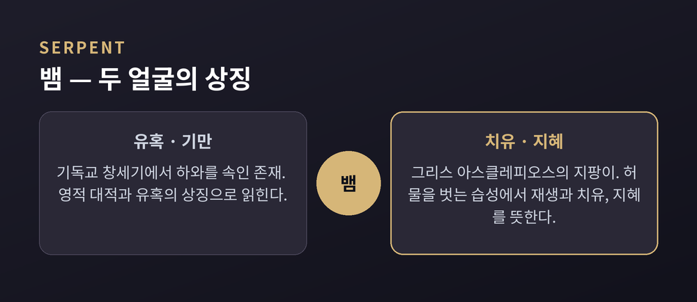
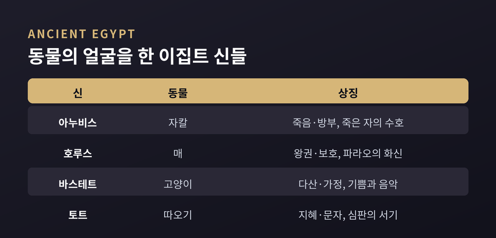
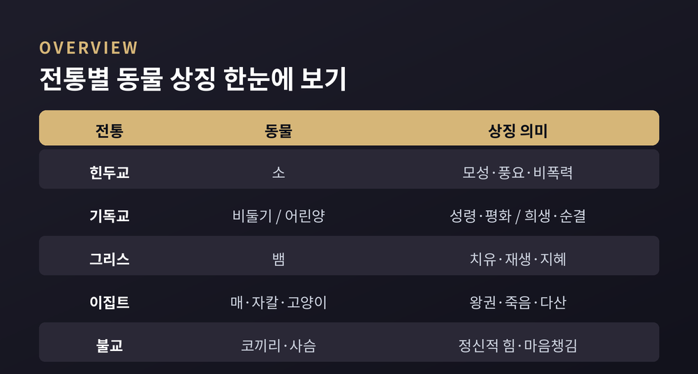

이번 글에서는 여러 종교 전통에서 동물이 어떤 상징을 지녔는지 정리해 보겠습니다. 소·뱀·비둘기·코끼리 같은 낯익은 동물들이 전통마다 전혀 다른 뜻으로 읽히는 모습을 살펴봅니다. 특정 신앙의 옳고 그름을 따지려는 글이 아닙니다. 각 전통이 동물에 무엇을 담아 왔는지, 그 결을 나란히 놓고 보려는 것입니다.
동물은 오래전부터 신의 성질을 눈에 보이게 하는 그릇이었습니다.
여러 전통에서 동물은 신적인 자질, 도덕적 가치, 우주의 질서를 대신 드러내는 상징으로 반복해 등장합니다. 믿음의 내용은 서로 달라도, 동물에 뜻을 실어 보는 방식만큼은 곳곳에서 비슷하게 나타납니다.
고대 이집트인들은 동물의 자연스러운 특성이 곧 신의 역할을 비춘다고 여겼습니다. 사나움, 온순함, 지혜로움 같은 성질을 신의 얼굴로 삼은 셈입니다. 동물을 향한 존숭에는 그 성질을 닮고 싶은 마음, 혹은 두려워하는 마음이 함께 담겨 있었습니다.
한 가지만 미리 짚겠습니다. 같은 동물이라도 전통이 바뀌면 뜻이 뒤집힙니다. 뱀이 그 대표적인 예입니다.
힌두교에서 소는 가장 널리 알려진 신성한 동물입니다. 흔히 "신이 준 선물"로 이야기됩니다.
소는 모성과 친절, 인내의 표상으로 존숭됩니다. 다산과 풍요, 대지의 은혜를 담은 상징이기도 합니다. 여신 락슈미, 신 크리슈나와 연결되며 온순함과 젖 같은 양식을 베푸는 성질 때문에 귀히 여겨집니다.
코끼리 머리를 한 신 가네샤는 또 다른 축입니다. 가네샤는 지혜와 힘, 새로운 시작을 상징하며 무엇보다 장애물을 치우는 신으로 불립니다. 코끼리 자체가 지혜와 기억을 뜻하는 동물로 읽힙니다.
원숭이는 서사시 라마야나의 하누만과 이어집니다. 하누만은 라마를 향한 흔들림 없는 헌신으로 유명합니다. 그래서 원숭이는 힘과 회복력, 규율, 헌신, 악으로부터의 보호를 상징하게 되었습니다. 인도 일부 지역에서 원숭이가 사원과 성스러운 숲에서 보금자리를 얻는 배경입니다.
뱀도 힌두 전통에 자리합니다. 나가라 불리는 뱀은 물과 보물을 지키는 존재로 그려지며, 우주적 에너지와 보호의 상징으로 시바 신과 연결됩니다. 뒤에서 다시 살펴볼 뱀의 두 얼굴을 미리 보여 주는 대목입니다.

기독교 전통에서 비둘기는 성령의 상징으로 이야기됩니다.
신약에는 예수가 세례를 받을 때 성령이 비둘기 모습으로 내려왔다고 서술됩니다. 그래서 비둘기는 성령의 순수와 평화, 새로운 시작을 담습니다. 구약 노아의 방주 이야기에서도 비둘기는 평화와 희망, 새 생명의 표지로 나옵니다.
어린양은 순결과 희생을 상징합니다. 구약에서 어린양은 죄 사함을 구하는 제물로 자주 쓰였습니다. 신약에서 예수는 "하나님의 어린양"으로 불리며, 인류를 위한 희생을 뜻하는 이름을 얻습니다.
한 전통 안에서 동물이 이렇게 여러 갈래의 뜻을 품는다는 점이 흥미롭습니다.
뱀만큼 성스러운 문헌에서 평가가 갈리는 동물도 드뭅니다.
기독교 전통에서 뱀은 창세기에서 하와를 속이는 존재로 처음 등장합니다. 이 맥락에서 뱀은 기만과 유혹, 하나님에 대한 영적 대적을 상징합니다.
같은 동물이 다른 자리에서는 정반대로 읽힙니다. 그리스 신화의 아스클레피오스는 치유의 신입니다. 뱀이 감긴 그의 지팡이는 오늘날까지 의술의 상징으로 쓰입니다. 여기서 뱀은 허물을 벗는 습성 때문에 재생과 치유, 지혜를 뜻합니다.
그리스인들은 뱀에게서 치유의 이중성을 보았습니다. 삶과 죽음을 동시에 가져올 수 있는 힘입니다. '약이자 독'을 함께 뜻하는 그리스어 파르마콘이 이 감각과 맞닿아 있습니다. 힌두 전통의 뱀 나가가 물과 보물을 지키는 수호자로 그려지는 것도 같은 결입니다.
어느 쪽이 '진짜'라고 말하기는 어렵습니다. 전통이 다르면 같은 동물에 다른 뜻을 실을 뿐입니다.

고대 이집트는 동물의 머리를 한 신들로 널리 알려져 있습니다.
자칼 머리의 아누비스는 죽음과 방부의 신입니다. 죽은 자를 지키고 사후세계로 영혼을 인도하는 역할을 맡았습니다. 매 머리의 호루스는 왕권과 보호를 상징했고, 파라오는 그의 지상 화신으로 여겨졌습니다.
고양이 머리의 바스테트는 다산과 가정을, 또 음악과 기쁨을 상징했습니다. 따오기 머리의 토트는 지혜와 문자의 신으로, 사후세계 심판을 기록하는 서기이자 상형문자를 만든 존재로 그려졌습니다.
각 동물이 신의 자리에 오른 이유는 분명합니다. 그 동물의 성질이 신의 역할을 가장 잘 비춘다고 보았기 때문입니다. 인간의 몸에 동물의 머리를 얹은 형상은 지성과 본능을 한 몸에 담으려는 시도였다고 읽히기도 합니다.

불교에도 상징으로 새겨진 동물들이 있습니다.
붓다의 어머니 마야 왕비는 그를 잉태하기 전 흰 코끼리가 코로 연꽃을 건네며 태로 들어오는 꿈을 꾸었다고 전합니다. 흰 코끼리는 붓다의 탄생을 예고하는 상징이 되었습니다. 불교에서 코끼리는 깨달음의 길로 나아가는 정신적 힘을 뜻합니다. 한번 길에 오르면 멈추지 않는 굳건함입니다.
사슴은 붓다의 첫 설법과 이어집니다. 그 설법이 이루어진 곳이 사르나트의 녹야원, 곧 사슴 동산이었습니다. 이 자리에서 사성제와 팔정도를 가르쳤다고 전합니다. 그래서 사슴은 온화함과 자비, 마음챙김을 상징하며, 두려움 없는 성스러운 자리의 순수함을 나타냅니다. 힌두교와 불교가 코끼리를 함께 귀히 여기면서도 서로 다른 뜻을 실었다는 점은 눈여겨볼 만합니다.
동물 상징은 큰 종교에만 있는 것이 아닙니다.
토테미즘은 씨족 같은 사회 집단이 특정 동물이나 식물을 자기 집단의 표장이자 조상, 수호자로 삼는 신앙입니다. 사회학자 에밀 뒤르켐은 이 토테미즘을 진정한 종교의 한 형태로 보았습니다. 오스트레일리아 원주민의 토템 신앙을 사례로 그의 종교 이론을 세웠습니다.
뒤르켐에게 토템은 집단 의식의 반영이었습니다. 부족이 토템을 숭배할 때, 실은 부족 자신을 숭배한다는 해석입니다. 신성함이란 사회적 감정의 반영이라는 관점입니다.
다만 이 견해가 종교의 보편적 기원으로 확정된 것은 아닙니다. 유력한 학설이었으나, 이후 인류학에서 여러 비판과 수정을 거쳤습니다. 한쪽 해석만 정답으로 두지 않는 편이 정확합니다.

정리하면 이렇습니다.
같은 소가 어느 전통에서는 어머니 같은 풍요이고, 같은 뱀이 어느 자리에서는 유혹이며 다른 자리에서는 치유입니다. 동물은 그대로인데, 사람이 거기에 다른 마음을 실어 온 셈입니다.
“신성한 동물은 동물에 대한 이야기가 아니라, 그 동물을 바라본 사람들에 대한 이야기입니다.”
낯선 전통의 동물 상징을 만나신다면, 옳고 그름을 가르기보다 먼저 그 뜻을 물어보시길 권합니다. 거기에 그 공동체가 무엇을 소중히 여겼는지가 담겨 있을 테니까요.
</content>